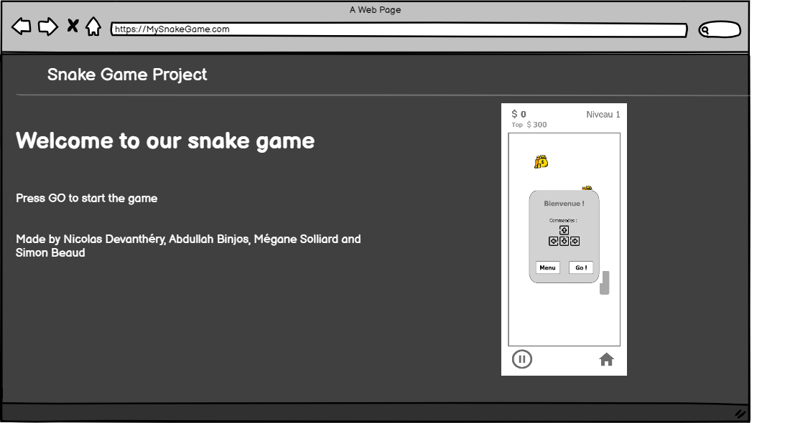

Maquette visuelle de votre projet
Par Simon Beaud le 05/04/2022 à 09:00
Description:
La page « description » contiens toute la description du projet. Le but de cette page et d’informer l’utilisateur de l’utilité du projet.
Maquettes:
La partie « maquettes » présente l’utilité de chaque page sur le site internet.
Mockup:
La partie « Mockup » mets en valeurs les designs/artworks du jeu.
Flux:
La partie « Flux » affiche le sitemap ainsi que les différentes séquences de jeu.
Journal de bord:
La partie « Journal de bord » contient toute les détails des modifications effectuées par les membres du groupe.
Game Website:
Le site internet hebergeant le jeu du Snake
